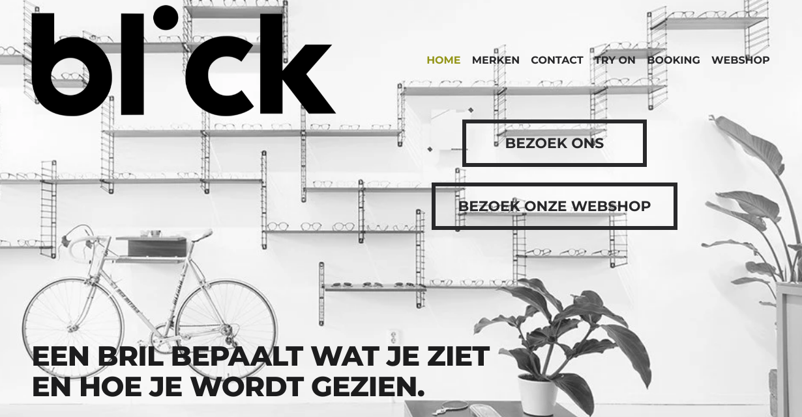
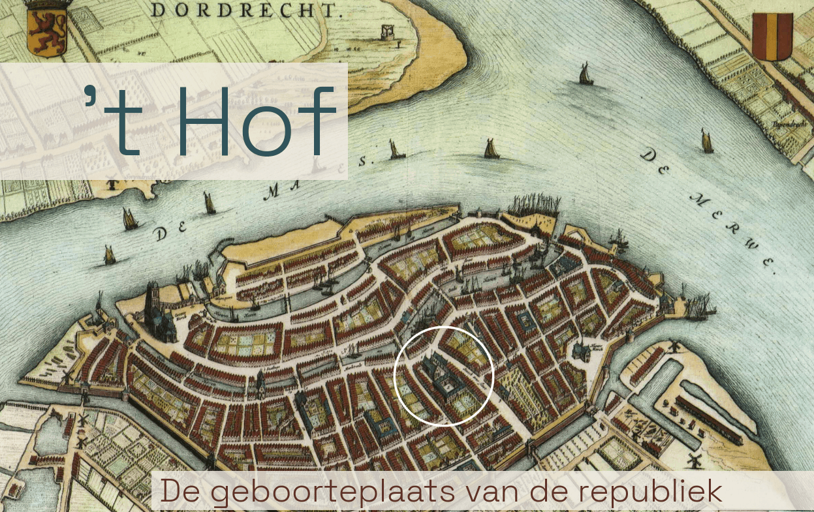
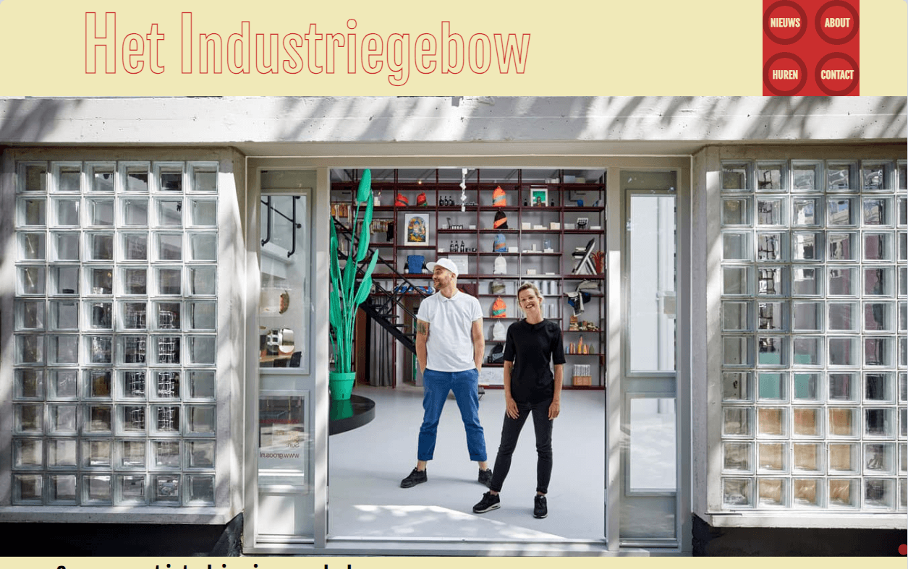

Website voor een brillenwinkel in Rotterdam. Bestaande website, gemaakt in
Squarespace, opnieuw gebouwd.
Middels toegevoegde CSS en JavaScript
geheel naar de wensen van de klant aangepast.

Dummysite (SPA) over het Hof in Dordrecht. Website over de geschiedenis van het onstaan van de republiek. React-project. JavaScript.

Dummysite over het Industriegebouw.
De website is opgezet als een nieuwssite met verschillende berichten.
Ook met een pagina waarin bedrijfsruimte gehuurd kan worden.
React-project. JavaScript.